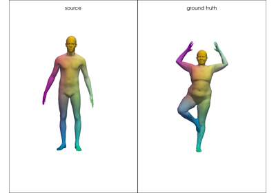

pyFM.mesh.TriMesh¶
- class pyFM.mesh.TriMesh(vertices, faces=None, *, area_normalize=False, center=False, normalize=False, rotation=None, translation=None, name=None)¶
Bases:
objectTriangle mesh, or point cloud when no faces are given.
Derived quantities (edges, normals, areas, Laplace-Beltrami operators and their spectrum) are computed on demand and stored.
- Parameters:
vertices (np.ndarray) – (n,3) coordinates of the vertices. A file path is also accepted, but this is deprecated: use
TriMesh.load()instead.faces (np.ndarray, optional) – (m,3) indices of the vertices of each triangle. Leave empty for a point cloud.
area_normalize (bool, optional) – If True, scale the mesh to unit area
center (bool, optional) – If True, move the center of mass to the origin
normalize (bool, optional) – Shorthand for
area_normalize=True, center=Truerotation (np.ndarray, optional) – (3,3) rotation matrix, applied first
translation (np.ndarray, optional) – (3,) translation vector, applied after the rotation
name (str, optional) – Name of the mesh. Defaults to the file stem when loaded from a file.
- stiffness¶
(n,n) cotangent weight matrix, also available as
W.- Type:
scipy.sparse
- mass¶
(n,n) area matrix, either diagonal or built with finite elements, also available as
A.- Type:
scipy.sparse
- eigenvalues¶
(k,) eigenvalues of the Laplace-Beltrami operator
- Type:
np.ndarray
- eigenvectors¶
(n,k) eigenvectors of the Laplace-Beltrami operator
- Type:
np.ndarray
- classmethod load(path, **kwargs)¶
Read a mesh from a
.offor.objfile.- Parameters:
path (str or os.PathLike) – path to the file to read
**kwargs – Any keyword argument accepted by
TriMesh.
- Returns:
mesh – the loaded mesh
- Return type:
- property vertices¶
Get or set the vertices. Checks the format when setting.
- Returns:
vertices – (n,3) array of vertices
- Return type:
np.ndarray
- property faces¶
Get or set the faces. Checks the format when setting.
- Returns:
faces – (m,3) array of faces, or None for a point cloud
- Return type:
np.ndarray
- property vertlist¶
vertlist is deprecated, use vertices instead.
- property facelist¶
facelist is deprecated, use faces instead.
- property is_point_cloud¶
Whether the mesh has no faces.
- Returns:
is_point_cloud – True if no faces are defined
- Return type:
- property n_vertices¶
Number of vertices in the mesh.
- Returns:
n_vertices – number of vertices in the mesh
- Return type:
- property n_faces¶
Number of faces in the mesh, 0 for a point cloud.
- Returns:
n_faces – number of faces in the mesh
- Return type:
- property edges¶
(p,2) array of edges, defined by vertex indices.
- Returns:
edges – (p,2) array of edges
- Return type:
np.ndarray
- property edge_lengths¶
(p,) array of edge lengths.
- Returns:
edge_lengths – (p,) array of edge lengths
- Return type:
np.ndarray
- property face_normals¶
(m,3) array of face normals.
- Returns:
face_normals – (m,3) array of face normals
- Return type:
np.ndarray
- property vertex_normals¶
(n,3) array of vertex normals.
- Returns:
vertex_normals – (n,3) array of vertex normals
- Return type:
np.ndarray
- property face_areas¶
(m,) array of face areas.
- Returns:
face_areas – (m,) array of face areas
- Return type:
np.ndarray
- property normals¶
normals is deprecated, use face_normals instead.
- property faces_areas¶
faces_areas is deprecated, use face_areas instead.
- property edges_lengths¶
edges_lengths is deprecated, use edge_lengths instead.
- property meshname¶
meshname is deprecated, use name instead.
- property is_intrinsic¶
Whether the operators were built on an intrinsic triangulation.
- Returns:
is_intrinsic – True if an intrinsic triangulation was used
- Return type:
- property vertex_areas¶
Per-vertex area.
- Returns:
vertex_areas – (n,) array of vertex areas
- Return type:
np.ndarray
- property area¶
Area of the mesh, None for an unprocessed point cloud.
- Returns:
area – area of the mesh
- Return type:
- property sqrt_area¶
Square root of the area.
- Returns:
sqrt_area – square root of the area
- Return type:
- property sqrtarea¶
sqrtarea is deprecated, use sqrt_area instead.
- property center_mass¶
Center of mass.
- Returns:
center_mass – (3,) array of the center of mass
- Return type:
np.ndarray
- property is_normalized¶
Whether the mesh has been area normalized with
area_normalize().- Returns:
is_normalized – whether the mesh has been area normalized
- Return type:
- property is_modified¶
Whether the mesh has been modified from the file it was read from, with non-isometric deformations.
- Returns:
is_modified – whether the mesh was modified with respect to the original input
- Return type:
- copy(deep=True)¶
Return a copy of the mesh.
Cached solvers are never copied. They wrap native objects that cannot be duplicated, and are rebuilt on demand on the copy.
- area_normalize()¶
Normalize the mesh by its area, keeping the center of mass fixed.
- Returns:
self – the mesh itself
- Return type:
- rotate(R)¶
Rotate the mesh and its normals.
- Parameters:
R (np.ndarray) – (3,3) rotation matrix
- Returns:
self – the mesh itself
- Return type:
- translate(t)¶
Translate the mesh.
- Parameters:
t (np.ndarray) – (3,) translation vector
- Returns:
self – the mesh itself
- Return type:
- scale(alpha)¶
Multiply the mesh by alpha, updating areas, spectrum and geodesic distances.
- center()¶
Center the mesh on its center of mass.
- Returns:
self – the mesh itself
- Return type:
- compute_operators(intrinsic=False, robust=False)¶
Build the Laplace-Beltrami operators, without computing the spectrum.
- compute_spectrum(k, intrinsic=False, return_spectrum=True, robust=False, verbose=False)¶
Compute the Laplace-Beltrami operators and their spectrum.
Consider using
process()for easier use.- Parameters:
k (int) – number of eigenvalues to compute
intrinsic (bool, optional) – Use an intrinsic triangulation. Defaults to False
return_spectrum (bool, optional) – Whether to return the computed spectrum, defaults to True
robust (bool, optional) – use the tufted Laplacian, defaults to False
verbose (bool, optional) – print progress. Defaults to False
- Returns:
eigenvalues (np.ndarray, optional) – (k,) - Only if return_spectrum is True.
eigenvectors (np.ndarray, optional) – (n,k) - Only if return_spectrum is True.
- laplacian_spectrum(*args, **kwargs)¶
laplacian_spectrum() is deprecated, use compute_spectrum() instead.
- process(k=200, skip_normals=True, intrinsic=False, robust=False, verbose=False)¶
Compute the LB spectrum and store it.
- Parameters:
k (int) – (default = 200) Number of eigenvalues to compute
skip_normals (bool, optional) – If set to True, skip normals computation. Defaults to True
intrinsic (bool, optional) – Use an intrinsic triangulation. Defaults to False
robust (bool, optional) – use the tufted Laplacian
verbose (bool, optional) – print progress
- Returns:
self – the mesh itself
- Return type:
- project(func, k=None)¶
Project one or multiple functions on the spectral basis.
- Parameters:
func (np.ndarray) – (n,p) or (n,) functions on the shape
k (int, optional) – dimension of the LB basis on which to project. If None use all the computed basis
- Returns:
projected_func – (k,p) or (k,) projected function
- Return type:
np.ndarray
- unproject(projection)¶
Build a function from its coefficients in the spectral basis.
- Parameters:
projection (np.ndarray) – (k,p) or (k,) functions on the reduced basis of the shape
- Returns:
func – (n,p) or (n,) reconstructed function on the vertices
- Return type:
np.ndarray
- decode(*args, **kwargs)¶
decode() is deprecated, use unproject() instead.
- reconstruct(func, k=None)¶
Reconstruct a function with the LB eigenbasis, ie project on the spectral basis and rebuild values on all vertices.
- Parameters:
func (np.ndarray) – (n,p) or (n,) - functions on the shape
k (int, optional) – Number of eigenfunctions to use. If None, uses the complete computed basis.
- Returns:
func – (n,p) or (n,) projected function
- Return type:
np.ndarray
- l2_sqnorm(func)¶
Return the squared L2 norm of one or multiple functions on the mesh.
For a single function f, this returns f.T @ A @ f with A the area matrix.
- Parameters:
func (np.ndarray) – (n,p) or (n,) functions on the mesh
- Returns:
sqnorm – (p,) array of squared l2 norms or a float only one function was provided.
- Return type:
np.ndarray
- l2_inner(func1, func2)¶
Return the L2 inner product of two functions, or pairwise inner products if lists of functions are given.
For two functions f1 and f2, this returns f1.T @ A @ f2 with A the area matrix.
- Parameters:
func1 (np.ndarray) – (n,p) or (n,) functions on the mesh
func2 (np.ndarray) – (n,p) or (n,) functions on the mesh
- Returns:
sqnorm – (p,) array of L2 inner products or a float if only one function per argument was provided.
- Return type:
np.ndarray
- h1_sqnorm(func)¶
Return the squared H^1_0 norm (L2 norm of the gradient) of one or multiple functions on the mesh.
For a single function f, this returns f.T @ W @ f with W the stiffness matrix.
- Parameters:
func (np.ndarray) – (n,p) or (n,) functions on the mesh
- Returns:
sqnorm – (p,) array of squared H1 norms or a float only one function was provided.
- Return type:
np.ndarray
- h1_inner(func1, func2)¶
Return the H1 inner product of two functions, or pairwise inner products if lists of functions are given.
For two functions f1 and f2, this returns f1.T @ W @ f2 with W the stiffness matrix.
- Parameters:
func1 (np.ndarray) – (n,p) or (n,) functions on the mesh
func2 (np.ndarray) – (n,p) or (n,) functions on the mesh
- Returns:
sqnorm – (p,) array of H1 inner products or a float if only one function per argument was provided.
- Return type:
np.ndarray
- integrate(func)¶
Integrate a function or a set of functions on the mesh.
- Parameters:
func (np.ndarray) – (n,p) or (n,) functions on the mesh
- Returns:
integral – (p,) array of integrals or a float only one function was provided.
- Return type:
np.ndarray
- geodesic_matrix(method='heat', sym=False, batch_size=500, verbose=False)¶
Compute the full matrix of pairwise geodesic distances.
This is an (n,n) dense matrix, so it gets expensive quickly. Save it yourself with
np.saveif you need it more than once, and hand it back tofarthest_point_sampling()through itsdistancesargument.- Parameters:
method (str, optional) –
Method to use to compute geodesic distances. One of:
”heat” : potpourri3d robust heat method (default)
”heat_pure” : pure-python heat method (falls back to “heat” if the mesh uses an intrinsic triangulation, since the pure-python path needs faces/normals that intrinsic meshes may lack)
”dijkstra” : graph-based Dijkstra algorithm
”fast_marching” : potpourri3d fast marching method
Defaults to “heat”.
sym (bool, optional) – Symmetrize the matrix if computed with the heat or fast marching method. Defaults to False
batch_size (int, optional) – If method is “heat_pure”, compute distances by batch
verbose (bool, optional) – Print progress
- Returns:
distances – (n,n) matrix of geodesic distances
- Return type:
np.ndarray
- get_geodesic(*args, **kwargs)¶
get_geodesic() is deprecated, use geodesic_matrix() instead.
- geodesic_from(i, method='heat')¶
Compute geodesic distances from vertex (or vertices) i using the given method.
- Parameters:
i (int or (p,) array of ints) – index (or indices) of the source vertex/vertices
method (str, optional) –
Method to use to compute geodesic distances. One of:
”heat” : potpourri3d robust heat method (default)
”heat_pure” : pure-python heat method (falls back to “heat” if the mesh uses an intrinsic triangulation, since the pure-python path needs faces/normals that intrinsic meshes may lack)
”dijkstra” : graph-based Dijkstra algorithm
”fast_marching” : potpourri3d fast marching method
Defaults to “heat”.
- Returns:
dist – (n,) distances to vertex i, or (n,p) if i is a sequence of length p
- Return type:
np.ndarray
- geod_from(*args, **kwargs)¶
geod_from() is deprecated, use geodesic_from() instead.
- farthest_point_sampling(size, random_init=True, geodesic=True, distances=None, verbose=False)¶
Sample points using farthest point sampling.
Distances to each new sample are computed on the fly, unless a full distance matrix is given as
distances.- Parameters:
size (int) – number of points to sample
random_init (bool, optional) – Whether to sample the first point randomly or to take the furthest away from all the other ones. The latter needs the full distance matrix, so this is only read when
distancesis given. Defaults to Truegeodesic (bool, optional) – If True perform geodesic fps, else euclidean. Defaults to True
distances (np.ndarray, optional) – (n,n) matrix of precomputed pairwise distances, as returned by
geodesic_matrix(). Saves recomputing distances at each step.verbose (bool, optional) – Print progress. Defaults to False
- Returns:
fps – (size,) array of indices of sampled points (given on the complete mesh)
- Return type:
np.ndarray
Notes
Without
distances, the first point is always drawn at random, so the result varies between calls. Passdistanceswithrandom_init=Falsefor a reproducible sample.
- extract_fps(*args, **kwargs)¶
extract_fps() is deprecated, use farthest_point_sampling() instead.
- farthest_point_sampling_sub(size, sub_points, return_sub_inds=False, random_init=True, geodesic=True, distances=None, verbose=False)¶
Sample points using farthest point sampling, restricted to a subset of vertices.
Distances to each new sample are computed on the fly, unless a full distance matrix is given as
distances.- Parameters:
size (int) – number of points to sample
sub_points (np.ndarray) – (size,) array of indices of the sub points
return_sub_inds (bool, optional) – Whether to also return the indices in the sub mesh. Defaults to False
random_init (bool, optional) – Whether to sample the first point randomly or to take the furthest away from all the other ones. Defaults to True
geodesic (bool, optional) – If True perform geodesic fps, else euclidean. Defaults to True
distances (np.ndarray, optional) – (n,n) matrix of precomputed pairwise distances, as returned by
geodesic_matrix(). Saves recomputing distances at each step.verbose (bool, optional) – Print progress. Defaults to False
- Returns:
fps (np.ndarray) – (size,) array of indices of sampled points (given on the complete mesh)
fps_sub (np.ndarray) – (size,) array of indices of sampled points (given on the sub mesh)
- extract_fps_sub(*args, **kwargs)¶
extract_fps_sub() is deprecated, use farthest_point_sampling_sub() instead.
- gradient(f, normalize=False)¶
Compute the gradient of a function using linear interpolation between vertices.
- Parameters:
f (np.ndarray) – (n_v,) function value on each vertex
normalize (bool, optional) – Whether the gradient should be normalized on each face
- Returns:
gradient – (n_f,3) gradient of f on each face
- Return type:
np.ndarray
- divergence(f)¶
Compute the divergence of a vector field on the mesh.
- Parameters:
f (np.ndarray) – (n_f, 3) vector value on each face
- Returns:
divergence – (n_v,) divergence of f on each vertex
- Return type:
np.ndarray
- orientation_op(gradf, normalize=False)¶
Compute the orientation operator associated to a gradient field gradf.
For a given function g on the vertices, this operator linearly computes < grad(f) x grad(g), n> for each vertex by averaging along the adjacent faces. In practice, we compute < n x grad(f), grad(g) > for simpler computation.
- Parameters:
gradf (np.ndarray) – (n_f,3) gradient field on the mesh
normalize (bool, optional) – Whether to normalize the gradient on each face
- Returns:
operator – (n_v,n_v) orientation operator.
- Return type:
- compute_normals()¶
Compute the per-face normals.
- Returns:
face_normals – (m,3) array of face normals
- Return type:
np.ndarray
- compute_vertex_normals()¶
Compute the per-vertex normals.
- Returns:
vertex_normals – (n,3) array of vertex normals
- Return type:
np.ndarray
- compute_edges()¶
Compute the edges.
- Returns:
edges – (p,2) array of edges
- Return type:
np.ndarray
- set_vertex_normal_weighting(weight_type)¶
Set the weighting scheme for vertex normals, between ‘area’ and ‘uniform’.
- Parameters:
weight_type (str) – weighting scheme for vertex normals, either ‘area’ or ‘uniform’
- save(path, precision=None, face_colors=None, vertex_normals=None, uv=None, texture=None, mtl_file='material.mtl', verbose=False)¶
Write the mesh to a
.offor.objfile.The format is chosen from the extension, defaulting to
.offwhen the path has none.- Parameters:
path (str or os.PathLike) – path of the file to write
precision (int, optional) – number of significant digits to write for each float
face_colors (np.ndarray, optional) – (m,3) color of each face. Only supported by the
.offformat.vertex_normals (np.ndarray or bool, optional) – (n,3) normal at each vertex, or True to use the normals of the mesh. Only supported by the
.objformat.uv (np.ndarray, optional) – (n,2) uv coordinates of each vertex. Only supported by the
.objformat.texture (str, optional) – name or path of the image defining the texture. Requires
uv, and writes the accompanying.mtlfile.mtl_file (str, optional) – name or path of the
.mtlfile to write alongside the textureverbose (bool, optional) – whether to print information
- Returns:
self – the mesh itself
- Return type:
- export(*args, **kwargs)¶
export() is deprecated, use save() instead.
- get_uv(ind1, ind2, mult_const, rotation=None)¶
Extract UV coordinates for each vertex.
Extracted by orthogonal projection on 2 of the x,y,z axes.
- Parameters:
- Returns:
uv – (n,2) UV coordinates of each vertex
- Return type:
np.ndarray
- export_texture(filename, uv, mtl_file='material.mtl', texture_im='texture_1.jpg', precision=None, verbose=False)¶
Write a .obj file with texture, using uv coordinates.
Deprecated, use
save(path, uv=uv, texture=texture_im)instead.- Parameters:
filename (str) – path to the .obj file to write
uv (np.ndarray) – (n,2) uv coordinates of each vertex
mtl_file (str, optional) – name of the .mtl file
texture_im (str, optional) – name of the .jpg file defining the texture
precision (int, optional) – number of significant digits to write for each float
verbose (bool, optional) – whether to print information
- Returns:
self – the mesh itself
- Return type:
Examples using TriMesh¶

Encoding Dense Correspondences in a Functional Map